Дизайн-система для команды 200+ человек. Time-to-market на 30% быстрее
Создание дизайн-системы с нуля для продукта-флагмана компании МойОфис
0→1 · Дизайн-система для Linux, Windows, macOS
О проекте
МойОфис — компания, которая выпускает экосистему продуктов для бизнеса, куда входят редакторы документов в мобильной, настольной и веб версиях, почта, корпоративный мессенджер и облачные хранилища.
| Пользователи | 1M+ MAU |
|---|---|
| Сектор | B2B, B2G, B2C |
| Платформа | desktop |
| ОС | Windows, Linux, macOS |

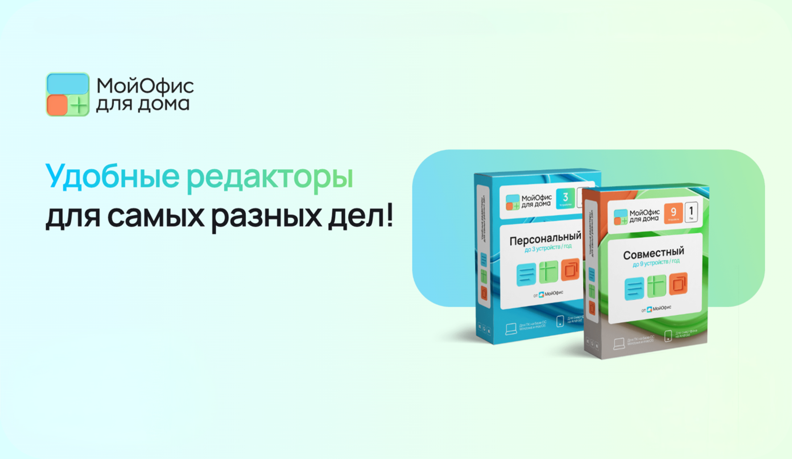
https://myoffice.ru/products/ofis-dlya-doma/

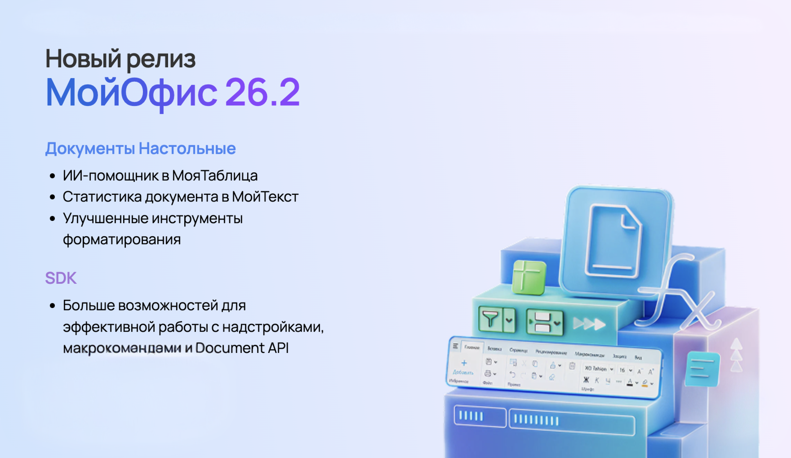
https://myoffice.ru/trial/
Команда:
настольные редакторы документов (таблица, текст, презентация), 200+ специалистов дизайна, разработки и тестирования.
Команда очень быстро росла в 2023 году, и оптимизация процессов, в частности создание дизайн-системы, стали обязательным условием для сохранения и увеличения скорости и качества выпускаемых фич.
ЦА
- Дизайнеры, разработчики, тестировщики команды (200+ человек)
- Пользователи настольных редакторов документов: более 1M+ MAU
Команда дизайн-системы
В разные периоды работы над дизайн-системой к нам присоединялись:
- 4–18 дизайнеров
- 2–7 разработчиков
Проблемы на старте
- Огромная команда 200+ человек и мискоммуникация
- 400 дубликатов компонентов в коде
- Локальные детачи компонентов и доработки каждым дизайнером отдельно
- Неконсистентность в принятии решений по UXUI
- 140+ часов потери за спринт на выяснение гайдлайнов которых нет
- UI Kit, который не работает и провоцирует к детачам компонентов
- Отсутствие поддержки доступности
- Огромный технический долг
- Отсутствие документации и принятых паттернов
- Процессы на ручнике
Результаты
- 60+ компонентов в Figma
- 20+ Qt/QML компонентов в коде
- Более 10 000 оптимизированных строк кода
- Библиотеки иконок, стилей, компонентов с нуля
- Поддержка accessibility, WCAG
- Автоматизация процессов для разработки: ручные операции и потеря времени на согласования превратились в результат за 1 клик
- Внедренные метрики дизайн-системы и фидбек команды
- Единая база знаний
- Storybook с нуля для Qt/QML
- Темизация интерфейса и масштабируемость системного подхода в токенах
Моя роль
Играющий тренер, дизайн-лид, проджект менеджер.
Как первопроходец я собирала текущие проблемы, анализировала узкие места, предлагала решения, самостоятельно тестировала их на себе как на дизайнере, далее внедряла новые подходы на всю команду и собирала фидбек с дизайнеров, разработчиков, тестировщиков.
Процесс
- Начали с доказательства того, что дизайн-система необходима, и я подготовила POC и экономическое моделирование текущего состояния и состояния процессов с внедренной дизайн-системой
- За счет этого добились выделения ресурсов отдельной команды
- Последовательно создавали и наполняли библиотеки с нуля под моим руководством
- Я предложила новые процессы, которые мы обкатали на команде, поправили шероховатости и бутылочные горлышки
- Автоматизировали работу разработки за счет внедрения новых процессов
- Внедрили метрики эффективности дизайн-системы, систему которых я разработала
Дальше опишу каждый пункт более подробно.
Proof of Concept
1 шаг
Я подготовила документ, в котором рассчитала текущие потери на процессах, за счет чего это можно починить, и как дизайн-система в этом поможет. В итоге получила расчеты бизнес-модели по внедрению дизайн-системы.
| 15,4% | минимум экономии на процессах после внедрения |
|---|---|
| 2 месяца | период окупаемости после внедрения |
| 3% | всего надо экономить на процессах, чтобы выйти в точку безубыточности |
| 22,7% | столько ROI получим в точке безубыточности |
В документе рассчитала 3 варианта внедрения в зависимости от полноты покрытия текущих процессов:
- только для дизайна,
- для дизайна и разработки,
- для дизайна, разработки и тестирования.

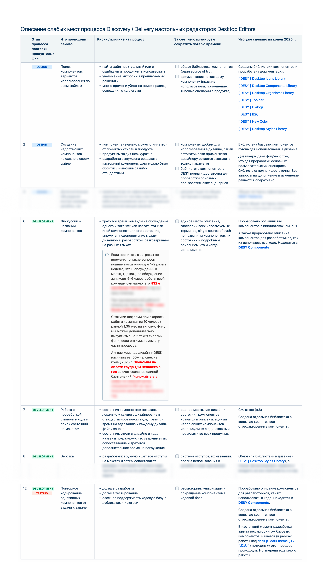

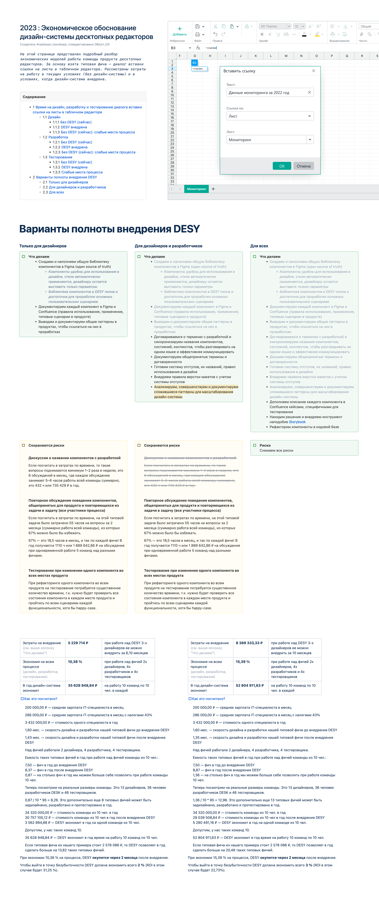
DESY — название дизайн-системы
2 шаг
Я презентовала этот документ на весь дизайн-департамент, нашла союзников, поговорила с моим лидом, лидом продуктового дизайна всей компании, лидами разработки.
В итоге совместными усилиями мы смогли продавить инициативу на уровень CTO.
3 шаг
Удалось получить выделенные ресурсы и команду под дизайн-систему.
По итогу этой работы я выступила на конференции ITGM’16 (Санкт-Петербург) в 2024, где рассказала про процесс и основные ошибки, которые мы допустили на этом пути.

Библиотека иконок
Пока происходило согласование ресурсов на дизайн-систему, я начала приводить в порядок библиотеку иконок.
Проблемы на старте с иконками
- Отсутствие единой библиотеки и правил использования
- Отсутствие процессов и документации
- Отсутствие правил нейминга и хранения
- Разница в наборе иконок в Figma и в коде
- Дубликаты иконок, их размеров, когда каждая иконка рисовалась 3 раза для каждого из редакторов
- .png формат, который не поддерживает хорошее качество при масштабировании интерфейса
- Более 5 000+ нерелевантных легаси ресурсов в коде
Что я сделала
- Создала централизованную библиотеку
- Систематизировала подход и описала процессы работы с иконками
- Проработала правила использования, размеры, правила рисования, гайдлайны
- Залидила процесс перехода с .png на .svg
- Протестила новые подходы на себе
- Добилась автоматизации процессов работы с иконками
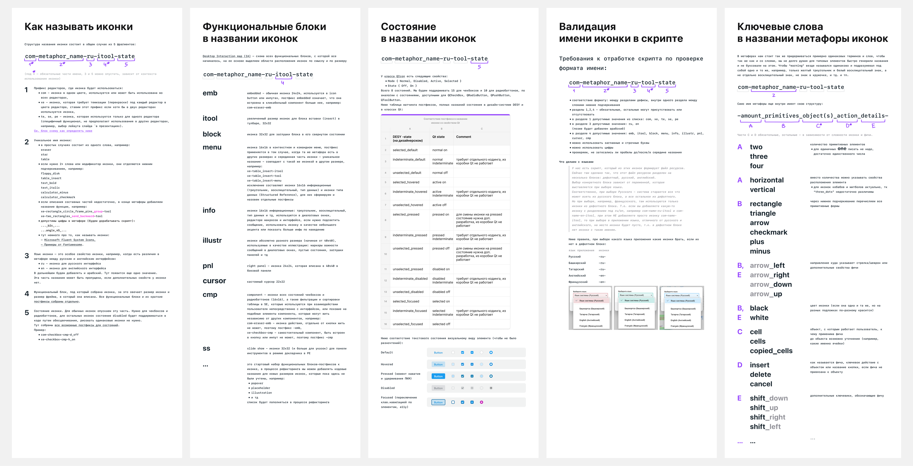
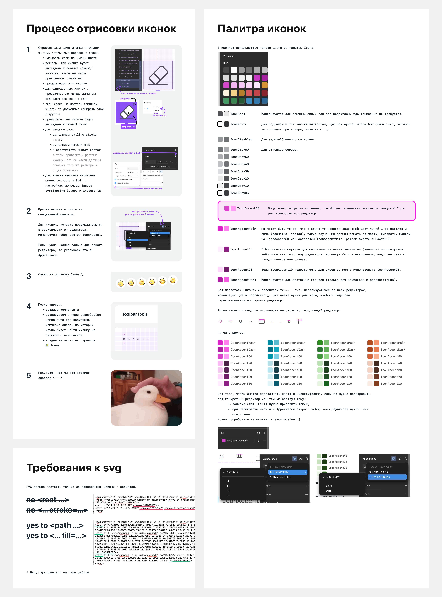
Что сделала команда дизайнеров
- Перерисовали более 1 500+ иконок в .svg под моим руководством
- Помогали своим фидбеком улучшать процессы, за счет чего я быстро адаптировала процессы под нужды команды
- Освоили работу с GitHub для переходного периода с .png на .svg
(в дальнейшем мы отказались от подхода и автоматизировали выгрузку иконок из Figma)


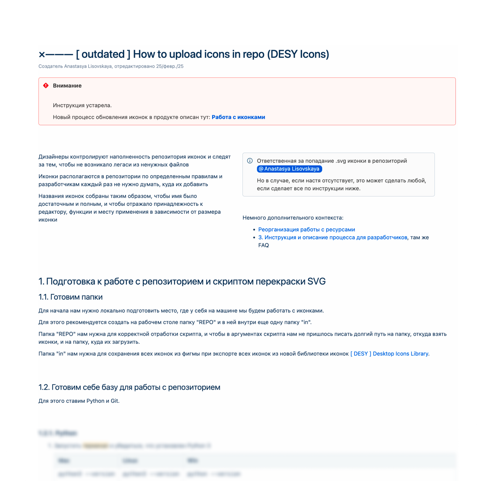
Что сделали разработчики
- Предоставили отдельный репозиторий на GitHub и инструкции для дизайнеров
- Заменяли иконки с .png на .svg автоматизированно и вручную
- Автоматизировали скриптом через API Figma подгрузку всех иконок в сборку продукта


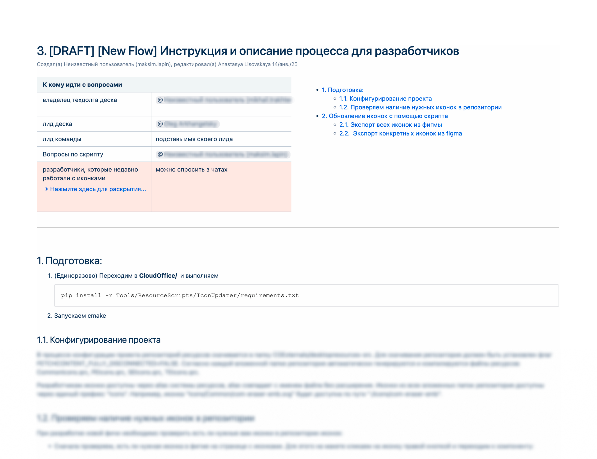
Что в итоге мы получили
Как команда
Построили простой и быстрый процесс для дизайнеров и разработчиков:
— Иконки заливаются в продукт за 1 клик и каждый разработчик умеет это делать
— Дизайнерам нужно только нарисовать иконку и положить ее в библиотеку
— Появилась документация, общая библиотека, процессы и гайдлайны
— Дизайнеры научились рисовать иконки по гайдам, и стало возможным делать кросс-ревью без моего участия (без участия лида)
Как бизнес
— За счет совершенствования процесса превратили часы ручного встраивания иконок в 1 клик
— Сделали визуальный код продукта более привлекательным и консистентным благодаря качественным ресурсам в формате .svg и поддержке масштабирования
Как продукт, которым пользуются более 1 млн человек
— Избавились от 200+ дубликатов и более 5000+ легаси графических ресурсов проекта, что уменьшило вес билда и добавило стройности и консистентности в визуальный язык интерфейса
— .svg формат позволил отображать интерфейс продукта без потери качества при масштабировании и на разных разрешениях экрана
Библиотека компонентов
Параллельно с перестройкой процессов работы с иконками, я как лид дизайн-системы начала приводить в порядок библиотеку компонентов.
Проблемы на старте с компонентами:
- UI Kit не отвечает функциональным требованиям к продукту и замедляет работу дизайнеров, вместо ускорения
- Дизайнеры детачат компоненты, создают копии и дорабатывают локально в своих задачах
- 400+ дубликатов компонентов в коде, и с библиотекой компонентов разработчики поступают так же, как дизайнеры: берут похожий компонент и дорабатывают локально под свои задачи
- Технические ограничения (Qt/QML) не дают в полной мере покрыть все запросы пользователей по функционалу
- Несоответствия между Figma и кодом
- Отсутствие процессов и правил
- Команда теряет время в каждом спринте на одни и те же задачи:
создание компонента, документацию, обработку корнер-кейсов и технических ограничений
Что я сделала:
- Составила список всех компонентов, которые необходимы для работы дизайнера: базовые, сложные организмы, шаблоны
- Спроектировала основные компоненты, UX-паттерны и задала общий вижн развития дизайн-системы для настольных редакторов
- Собрала дизайн сторибука и лидила его создание и запуск (мы делали свой с нуля для Qt/QML компонентов)
- Собрала новые процессы с нуля, где выступала в роли наставника и ревьюера текущих работ дизайнеров
- Полностью лидила процесс, где составляла стратегию, роадмапы развития дизайн-системы, планировала задачи и ресурсы команды

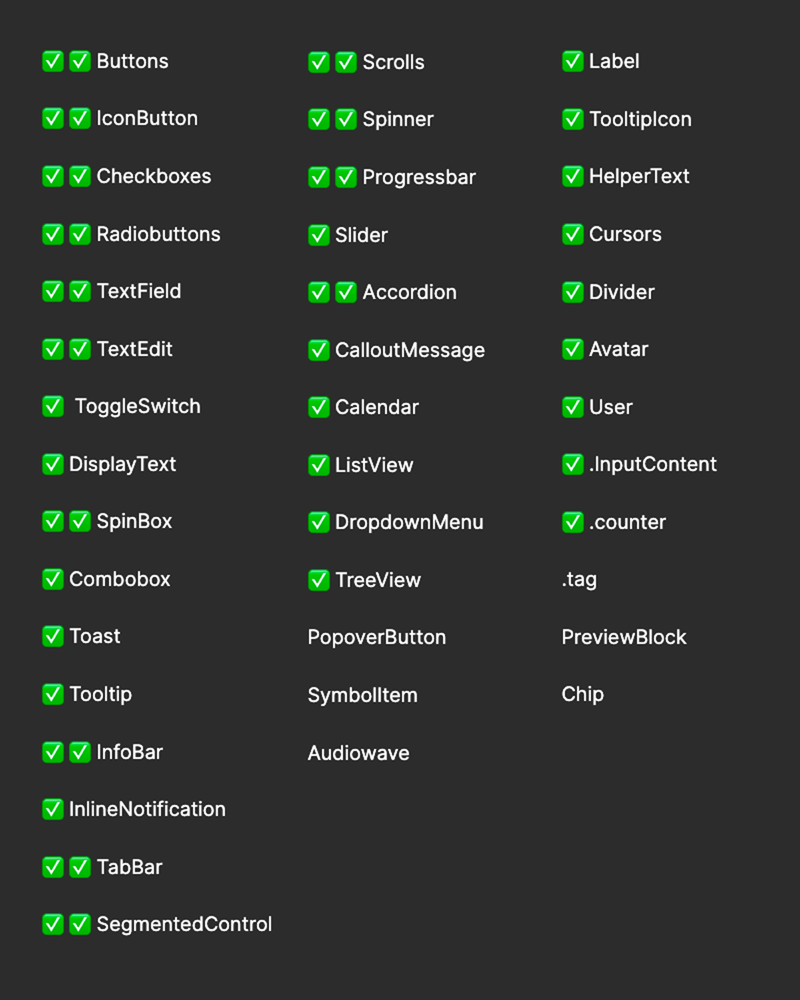

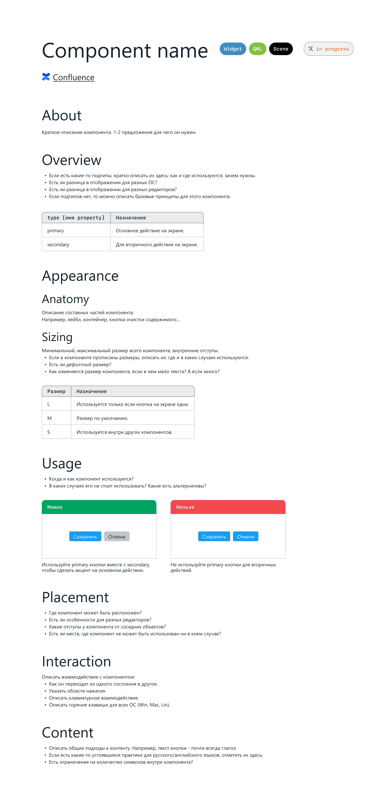
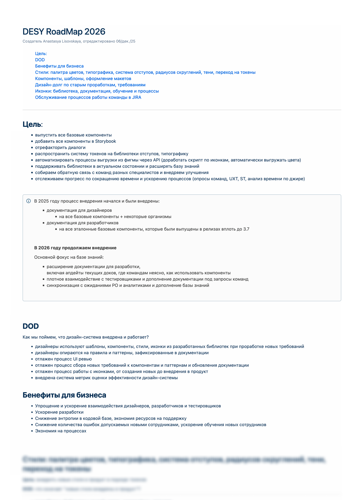
Первая стратегия была написана в 2025, когда мы активно развивали дизайн-систему. Здесь я обновляю стратегию относительно тех результатов, которые мы достигли в 2025. По каждому разделу расписан DOD для дизайна и разработки, уже выполненные задачи и план на следующий год.
Что сделала команда дизайнеров
В зависимости от стадии и скорости работы над дизайн-системой в команде работали от 2 до 5 дизайнеров.
Что сделали:
- Спроектировали более 60+ компонентов в Figma
- Собрали дизайн базовых компонентов с нуля, где анализировали их использование в продукте с более чем 100+ функций
- Собрали дизайн компонентов-организмов повышенной сложности с нуля (диалоги, панель инструментов, вспомогательные боковые панели и др.)
- Доработали и расширили зарождавшуюся библиотеку гайдов и UX-паттернов
- Сделали полный редизайн библиотеки стилей
- Создали и регулярно обновляли словарь-глоссарий терминов дизайн-системы для всей команды, чтобы разговаривать на одном языке дизайнерам, разработчикам и тестировщикам 200+ человек
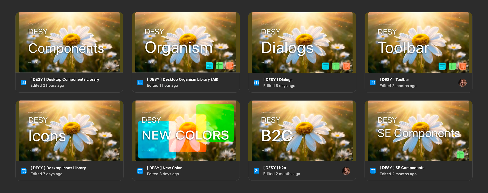

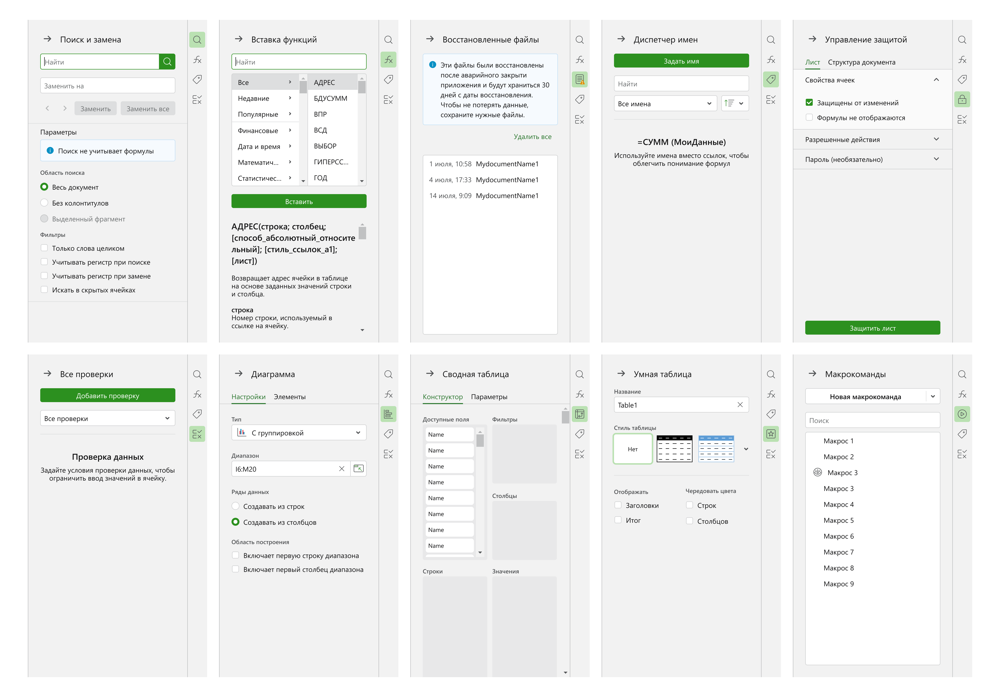
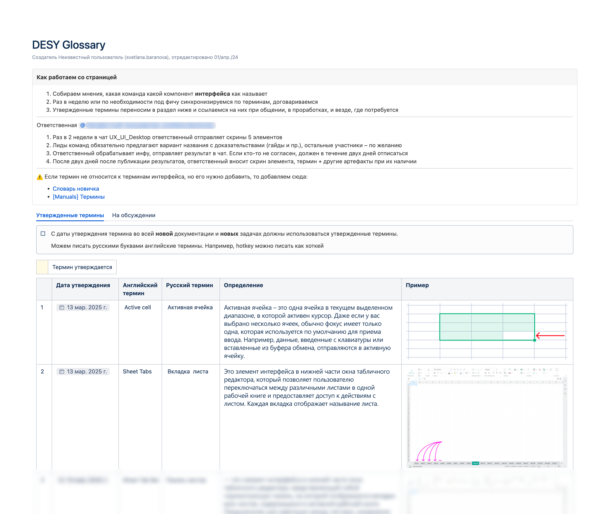
Что сделали разработчики
В зависимости от стадии и скорости работы над дизайн-системой в команде работали от 2 до 7 разработчиков.
Что сделали:
- Реализовали более 20+ базовых Qt/QML компонентов в коде
- С нуля собрали сторибук для Qt/QML технологий и добавили туда 20+ базовых компонентов
- Написали техническую документацию по каждому компоненту
- Отрефакторили 12-летний легаси код для замены старых компонентов на новые в продукте
- Регулярно участвовали в демо дизайн-системы и обучали дизайнеров и тестировщиков техническим особенностям реализации и ограничениям компонентов на Qt/QML
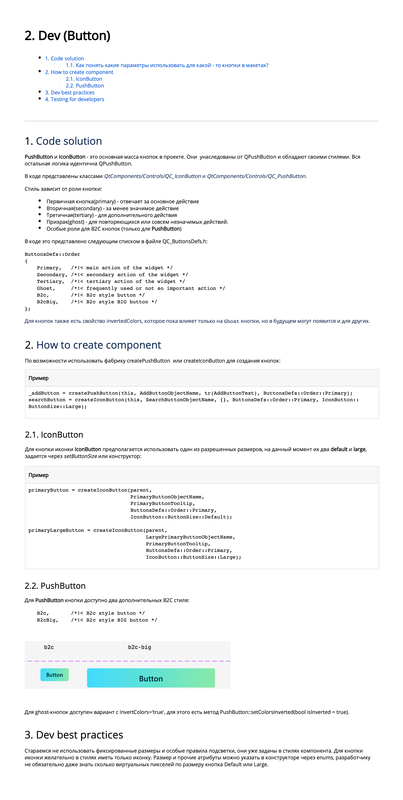
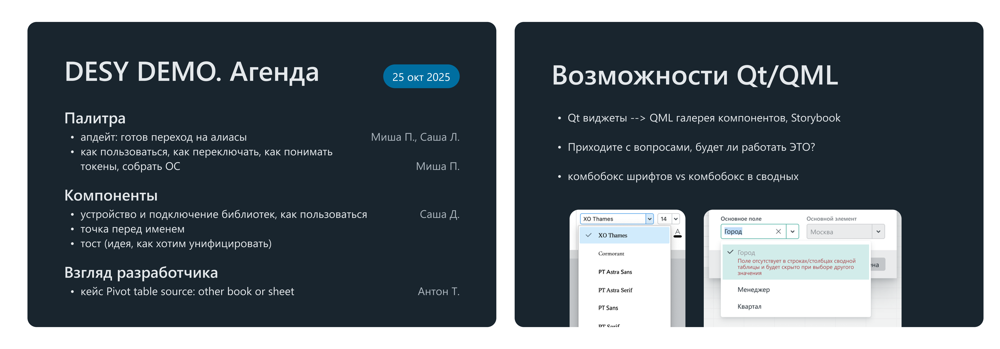
Что в итоге мы получили
Как команда
Построили простой и быстрый процесс для дизайнеров и разработчиков:
— Разработали и внедрили 20+ базовых компонентов дизайн-системы, что ускорило разработку на 28%
— Разработали 60+ сложных компонентов дизайн-системы в Figma, что ускорило дизайн-процесс на 30%
— Создали общую базу знаний для более чем 200+ членов команды (дизайн, разработка, тестирование) по компонентам и как их использовать в дизайне, коде и на что смотреть при тестировании
— Устранили несоответствия между Figma и кодом
— Ускорили дизайн-ревью и код-ревью
— Снизили количество дефектов и ошибок в каждом релизе за счет рефакторинга: компоненты стали вести себя одинаково в каждой фиче
Как бизнес
— За счет единых гайдов, документации и процессов ускорили выпуск продукта (time-to-market) на 30%
— За счет рефакторинга легаси-кода и устранения несоответствий между Figma и кодом стабилизировали релизы: в них стало меньше багов, что позволило сократить время на тестирование
— За счёт внедрения базовых компонентов повысили качество UX и UI решений: продукт стал выглядеть более профессионально
— Сократили количество обращений пользователей в поддержку с повторяющимися вопросами
Как продукт, которым пользуются более 1 млн человек
— Устранили разное поведение и неконсистентное использование компонентов, что сделало использование продукта более удобным и интуитивно понятным
— Пользователи стали быстрее получать обновления с новыми фичами, что повысило их удовлетворенность при работе с продуктом
Библиотека стилей, цветов
Параллельно с построением библиотек компонентов и документации к ним, чем занималась команда дизайн-системы, я начала приводить в порядок палитру цветовых стилей.
Проблемы на старте с цветами:
- Скудная палитра, которой не хватает для полноценной разработки новых фич
- Цвета придумываются и добавляются дизайнерами локально в их Figma-файлах
- Сложно отследить где, кто, какой и для чего придумал новый цвет
- Разработчики вручную добавляют цвета в .csv файл, что провоцирует ошибки
- Стили компонентов, в том числе цвета, хранятся в разных местах по коду, нет единой библиотеки
- Нет централизованных правил использования того или иного оттенка
- Нет поддержки темной темы и white labeling

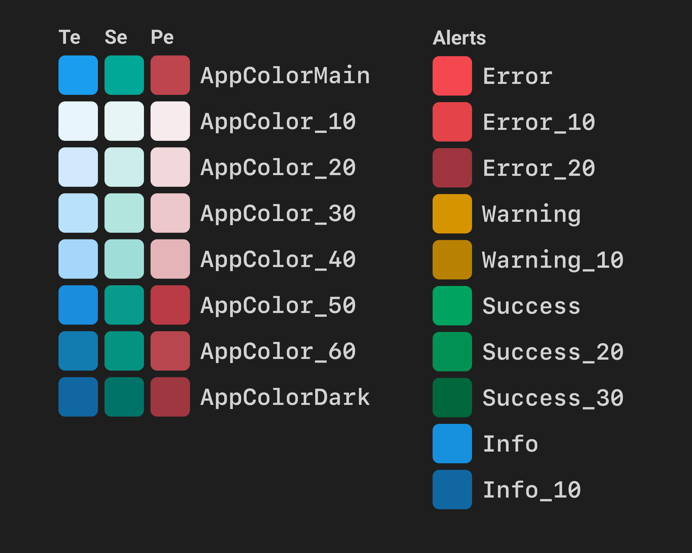

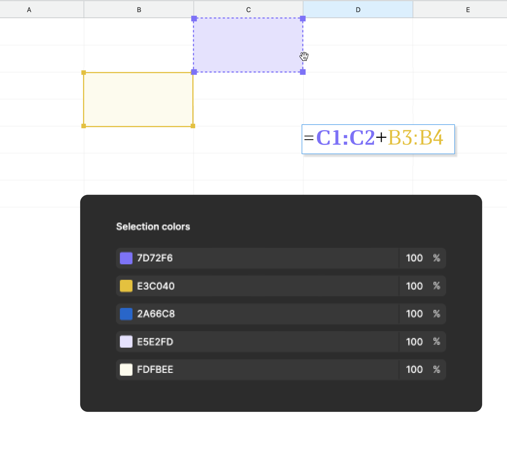
Что я сделала:
- Проанализировала текущие проблемы и собрала требования к палитре на будущее, учитывая будущие потребности команды и продукта при масштабировании решения
- Определила основы для библиотеки цветовых токенов
- Создала новую палитру с нуля, проанализировав более 100+ фичей на предмет использования палитры
- Создала стабильную и масштабируемую систему токенов
- Проработала и включила в решение поддержку тем и доступности (accessibility)
- Задокументировала основы, гайды и процесс работы с палитрой
- Создала, протестировала и запустила четкие процессы работы с палитрой на команду 200+ человек
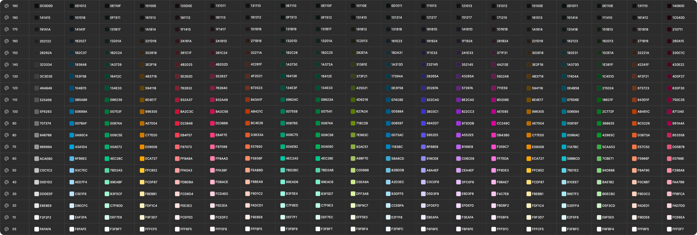
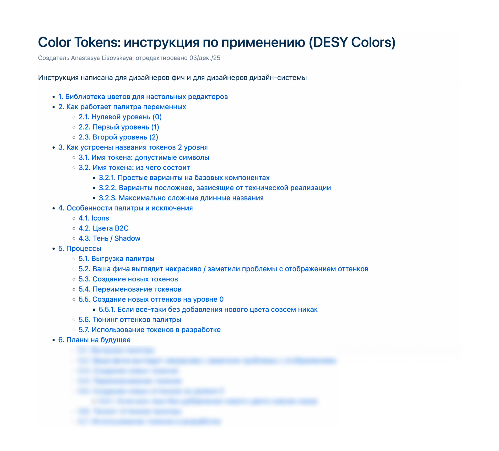
Что сделала команда дизайнеров
В фазе активного внедрения новой палитры участвовало 15 дизайнеров.
Что сделали:
- Внедрили новые цвета в уже готовые к тому времени компоненты
- Сопоставили старые и новые цвета, задавали вопросы, где находили несостыковки
- Активно давали обратную связь при внедрении новой системы и процессов
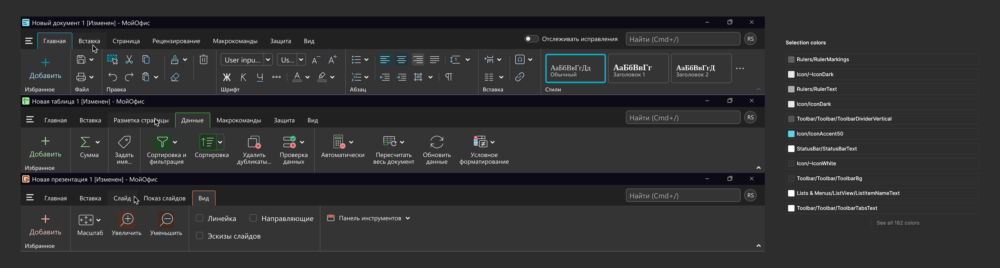
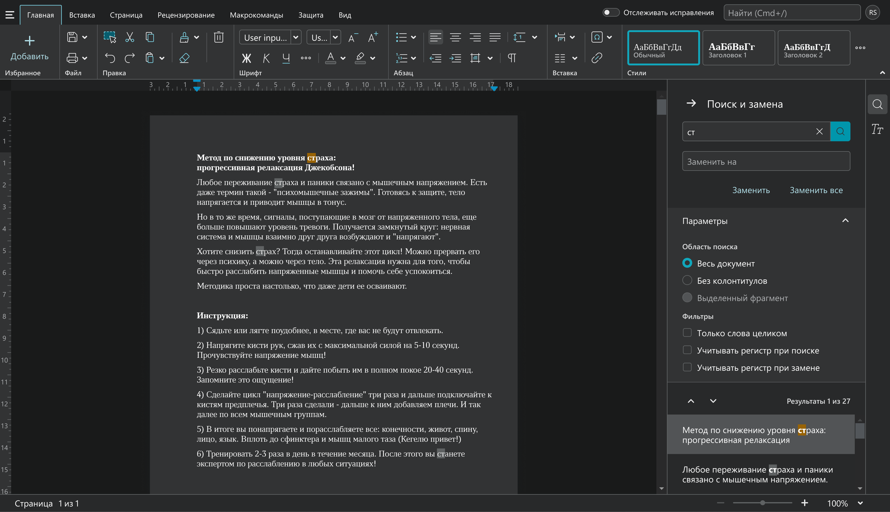


Что сделали разработчики
Внедрение новой палитры в код происходило силами 4 разработчиков.
Что сделали:
- Исследовали легаси код в начале работы над палитрой, что дало понимание объема работ и количества мест в коде, где прописаны стили
- Написали скрипт и нашли захардкоженные цвета (более 300+ цветов)
- Провели масштабный рефакторинг стилей в продукте, выделив одну единственную библиотеку под это
- Автоматизировали процесс миграции от старых .css и .csv файлов к новой библиотеке
- Тесно сотрудничали с дизайнерами и помогали найти те места в продукте из 100+ фич, где стили не применились или где цвета надо адаптировать


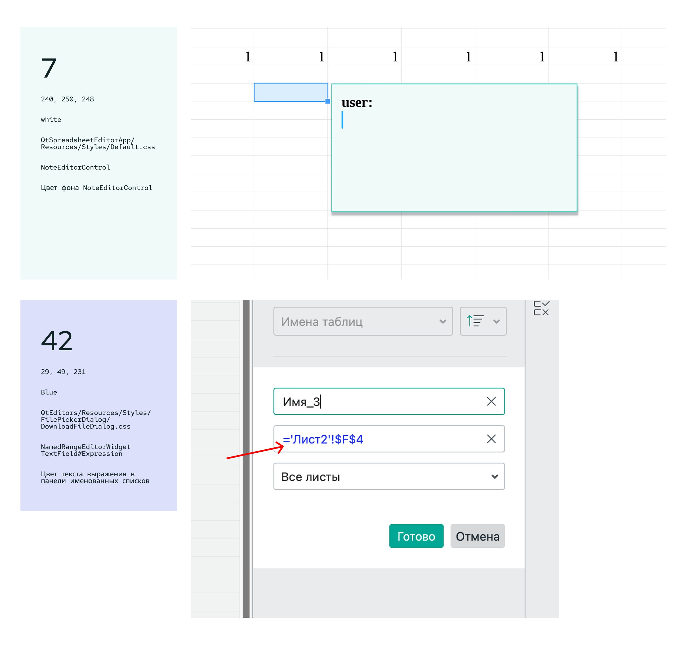
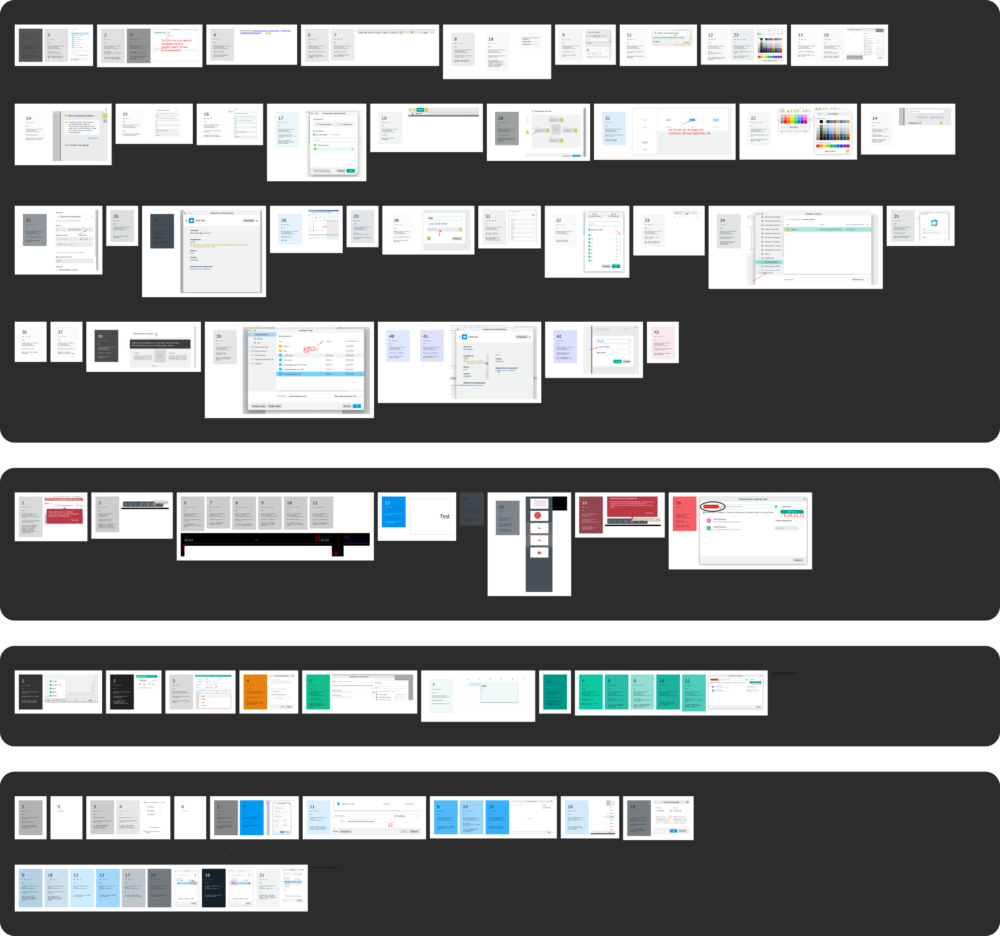
Что в итоге мы получили
Как команда
— Полную палитру, охватывающую все функции и адаптированную под задачи дизайна
— Простой и задокументированный процесс для дизайнеров и разработчиков
— Разработчикам нужно просто один раз вставить название цвета в код
— Настройка цветов и финальный тюнинг полностью на дизайнерах без вмешательства в код
Как бизнес
— Превратили часы ручного хардкода цветов в сборку в 1 клик
— Множественные исправления цветов в 1 клик вместо недель работы и согласований
— Добавили возможность быстро масштабироваться и адаптироваться к требованиям рынка (white labeling, темная тема и поддержка доступности)
Как продукт, которым пользуются более 1 млн человек
— Увеличили визуальное качество, консистентность и контрастность элементов в продукте
— Внедрили поддержку гайдлайнов доступности (accessibility) в продукте
— Внедрили поддержку темной темы
Основываясь на этом опыте, я выступила с докладом в феврале 2026 года на конференции DUMP Spb.
Там я поделилась методологией и процессом создания цветовых токенов с нуля, когда приходится иметь дело с 12-летним легаси и хаосом в визуальных решениях. Рассказала про каждый шаг, начиная с анализа кода и заканчивая внедрением нового процесса.

Прозрачность процессов
Проделать такую масштабную работу было бы невозможно без командных активностей.
Для обеспечения прозрачности процессов и прогресса по дизайн-системе мы делали:
- Еженедельные синки
- Регулярные демо
- Дизайн-ревью
- Ретроспективы
Отдельно хочу выразить благодарность команде, ведь без обратной связи не удалось бы внедрение такой огромной работы в ежедневные процессы команды.
Коллеги активно принимали участие в этом: задавали вопросы, давали обратную связь о новых процессах, тесно сотрудничали и обучали друг друга, помогали распространять знания о дизайн-системе на команду более 200+ человек.
Метрики и фидбек от команды
Все результаты, которые были получены в ходе работы над дизайн-системой с нуля, основаны на системе метрик, которую я разработала как лид и внедрила вместе с командой.
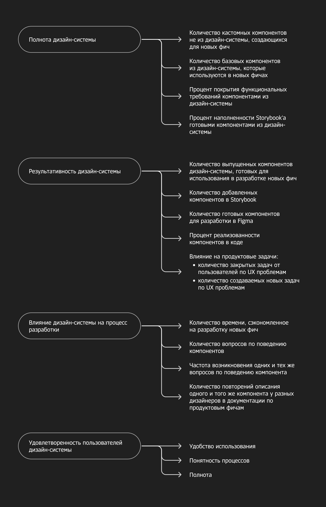
Кроме сбора цифр мы провели качественное исследование и собрали фидбек с пользователей дизайн-системы: дизайнеров, разработчиков и тестировщиков.
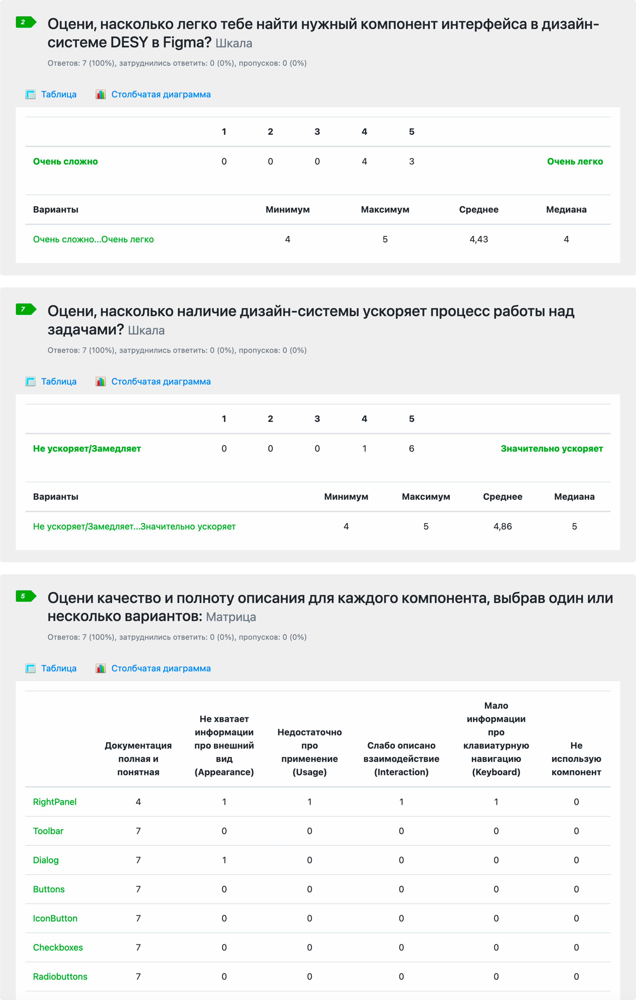
Финальные результаты
Вместе с командой мы прошли этот путь с нуля до системы, которая служит команде, продукту и бизнесу, ускоряя процессы и помогая продукту масштабироваться и расти, не теряя при этом в качестве.
| 30% | ускорение time-to-market |
|---|---|
| 60% | покрытия потребностей дизайнеров и разработчиков |
| 80% | более высокое визуальное качество и консистентность: — доступность — масштабируемость — адаптивность |